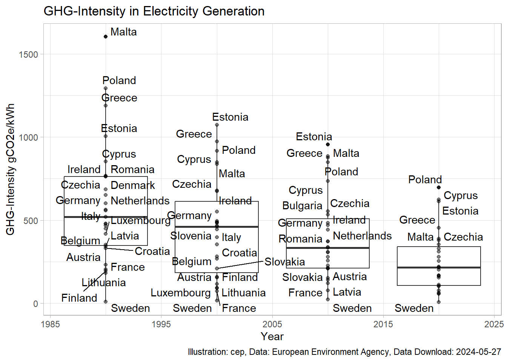
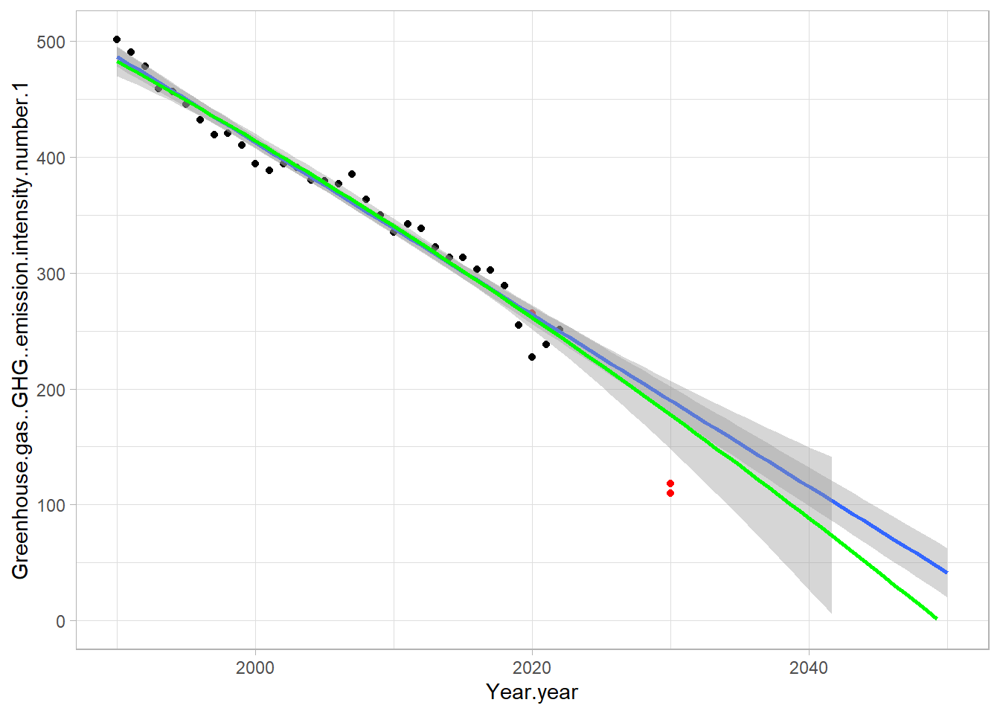
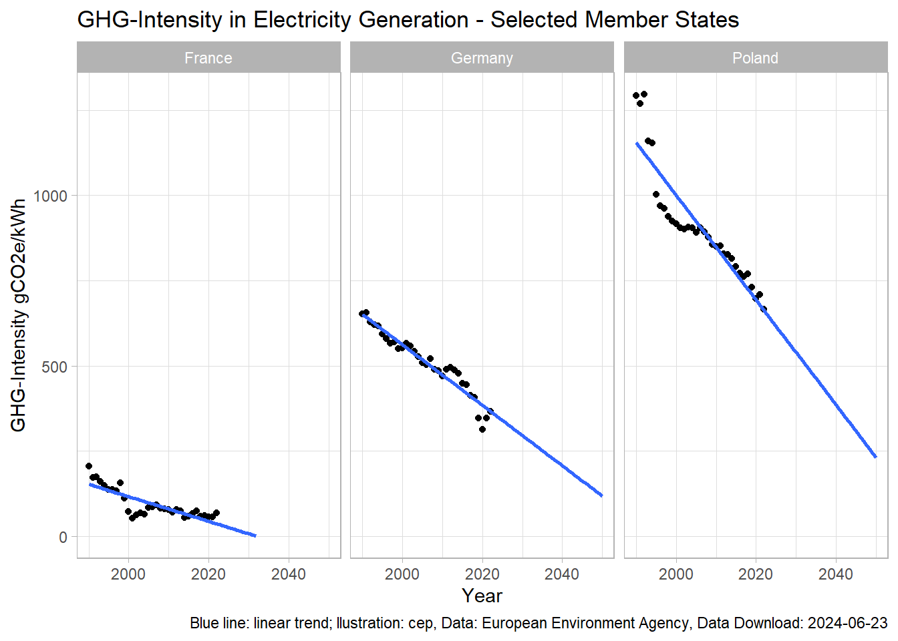
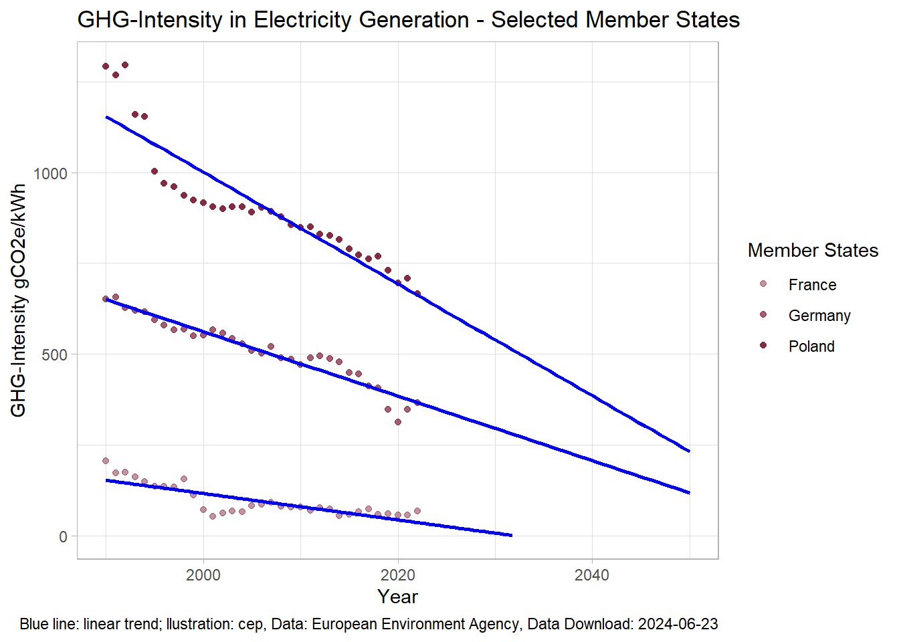
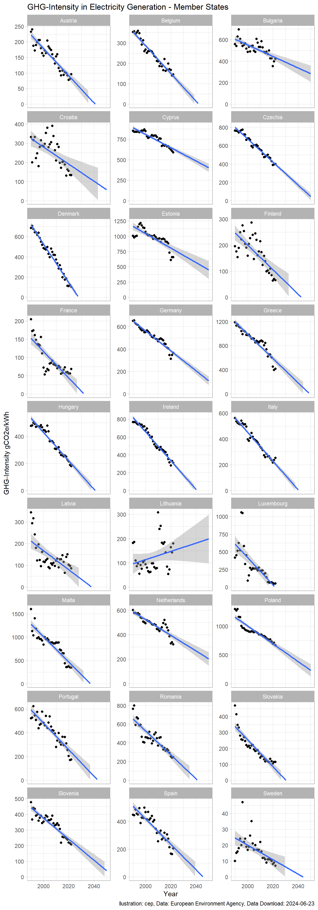
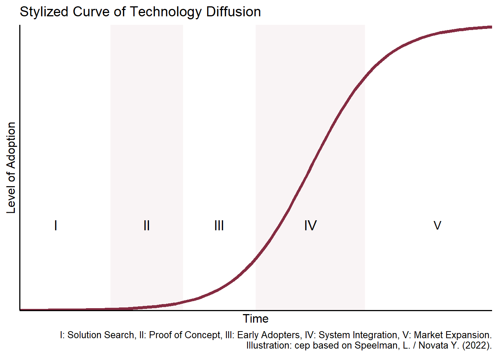
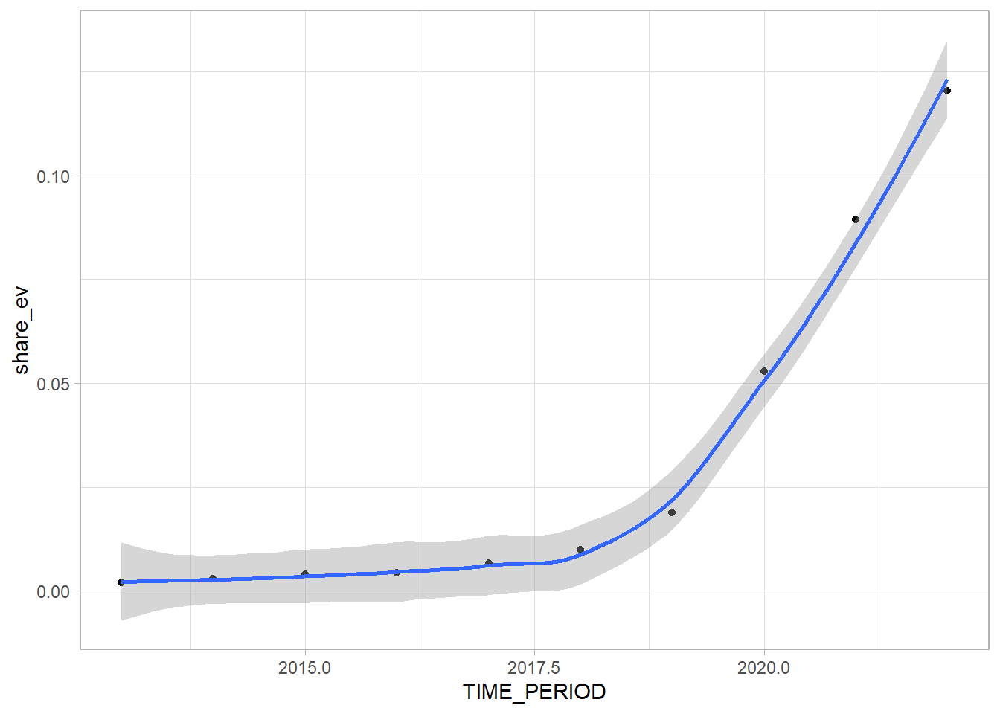

# Data from EEA Homepagelibrary(tidyverse)#gCO2e/kWhdf<-read.csv("https://www.eea.europa.eu/data-and-maps/daviz/co2-emission-intensity-14/download.csv") # %>%# filter(Member.State.text=="EU-27")head(df)
Year.year Member.State.text Greenhouse.gas..GHG..emission.intensity.number
1 2020 EU-27 NA
2 2030 EU-27 NA
3 1990 Sweden NA
4 1991 Sweden NA
5 1992 Sweden NA
6 1993 Sweden NA
Greenhouse.gas..GHG..emission.intensity.number.1 Indicative.level.high.number
1 NA 265
2 NA 118
3 10 NA
4 15 NA
5 16 NA
6 18 NA
Indicative.level.low.number
1 265
2 110
3 NA
4 NA
5 NA
6 NA
Boxplots GHG Intensity of Electricity in Member States
Code
library(ggrepel)df %>%filter(Member.State.text!="EU-27", Year.year %in%c(1990, 2000, 2010, 2020)) %>%#View() %>% ggplot(aes(Year.year, Greenhouse.gas..GHG..emission.intensity.number.1, group=Year.year, label=Member.State.text))+geom_boxplot()+geom_point(alpha=.5)+geom_text_repel()+# tbd: Select Member Statestheme_light()+labs(title="GHG-Intensity in Electricity Generation",x="Year",y="GHG-Intensity gCO2e/kWh",caption =paste("Illustration: cep, Data: European Environment Agency, Data Download:", Sys.Date(), sep =" "))

History and Trend GHG Intensity of Electricity in EU
Code
cep1 <-I(rgb(133/255, 43/255, 65/255, 1))df %>%filter(Member.State.text=="EU-27") %>%arrange(Year.year) %>%# fill(Greenhouse.gas..GHG..emission.intensity.number.1,.direction = "down") %>%ggplot(aes(Year.year, Greenhouse.gas..GHG..emission.intensity.number.1, ))+geom_point(color=cep1)+#geom_line()+# geom_point(aes(y=Indicative.level.high.number), color="red")+# geom_point(aes(y=Indicative.level.low.number), color="red")+geom_smooth(method='glm', fullrange=T, se=F)+# linear#geom_smooth(method='glm', formula = y~x + I(x^2),# method.args = list(family = gaussian(link = 'log')),# fullrange =T, color = "orange")+geom_smooth(method="glm",formula = y ~ x +I(x^2), fullrange =T,color="green", se=F)+# quadraticxlim(min(df$Year.year), 2050)+ylim(0, max(df$Greenhouse.gas..GHG..emission.intensity.number.1))+theme_light()+labs(title="GHG-Intensity in Electricity Generation - EU",x="Year",y="GHG-Intensity gCO2e/kWh",caption =paste("Blue line: linear trend, green line: quadratic trend; Illustration: cep, Data: European Environment Agency, Data Download:", Sys.Date(), sep =" "))

History and Trend GHG Intensity of Electricity in selected Member States
Code
df %>%filter(Member.State.text %in%c("France", "Germany", "Poland")) %>%# arrange(Year.year) %>%# fill(Greenhouse.gas..GHG..emission.intensity.number.1,.direction = "down") %>%ggplot(aes(Year.year, Greenhouse.gas..GHG..emission.intensity.number.1, ))+geom_point()+#geom_line()+# geom_point(aes(y=Indicative.level.high.number), color="red")+# geom_point(aes(y=Indicative.level.low.number), color="red")+geom_smooth(method='glm', fullrange=T, se=F)+# linear#geom_smooth(method='glm', formula = y~x + I(x^2),# method.args = list(family = gaussian(link = 'log')),# fullrange =T, color = "orange")+#geom_smooth(method="glm",# formula = y ~ x + I(x^2), fullrange =T,color="green")+ # quadraticxlim(min(df$Year.year), 2050)+ylim(0, max(df$Greenhouse.gas..GHG..emission.intensity.number.1))+theme_light()+facet_wrap(~Member.State.text,# scales="free_y")+labs(title="GHG-Intensity in Electricity Generation - Selected Member States",x="Year",y="GHG-Intensity gCO2e/kWh",caption =paste("Blue line: linear trend; llustration: cep, Data: European Environment Agency, Data Download:", Sys.Date(), sep =" "))

Code
cep1 <-I(rgb(133/255, 43/255, 65/255, 1))cep2 <-I(rgb(133/255, 43/255, 65/255, .75))cep3 <-I(rgb(133/255, 43/255, 65/255, .5))df %>%filter(Member.State.text %in%c("France", "Germany", "Poland")) %>%# arrange(Year.year) %>%# fill(Greenhouse.gas..GHG..emission.intensity.number.1,.direction = "down") %>%ggplot(aes(Year.year, Greenhouse.gas..GHG..emission.intensity.number.1, group= Member.State.text, color=Member.State.text ))+geom_point()+#geom_line()+# geom_point(aes(y=Indicative.level.high.number), color="red")+# geom_point(aes(y=Indicative.level.low.number), color="red")+geom_smooth(method='glm', fullrange=T, se=F, color="blue")+# linear#geom_smooth(method='glm', formula = y~x + I(x^2),# method.args = list(family = gaussian(link = 'log')),# fullrange =T, color = "orange")+#geom_smooth(method="glm",# formula = y ~ x + I(x^2), fullrange =T,color="green")+ # quadraticxlim(min(df$Year.year), 2050)+ylim(0, max(df$Greenhouse.gas..GHG..emission.intensity.number.1))+scale_color_manual(values=c(cep3, cep2, cep1))+theme_light()+# facet_wrap(~Member.State.text,# scales="free_y"#)+labs(title="GHG-Intensity in Electricity Generation - Selected Member States",x="Year",y="GHG-Intensity gCO2e/kWh",color="Member States",caption =paste("Blue line: linear trend; llustration: cep, Data: European Environment Agency, Data Download:", Sys.Date(), sep =" "))

History and Trend GHG Intensity of Electricity in all Member States
Code
df %>%filter(Member.State.text !="EU-27") %>%arrange(Year.year) %>%# fill(Greenhouse.gas..GHG..emission.intensity.number.1,.direction = "down") %>%ggplot(aes(Year.year, Greenhouse.gas..GHG..emission.intensity.number.1, ))+geom_point()+#geom_line()+# geom_point(aes(y=Indicative.level.high.number), color="red")+#geom_point(aes(y=Indicative.level.low.number), color="red")+geom_smooth(method='glm', fullrange=T)+# linear#geom_smooth(method='glm', formula = y~x + I(x^2),# method.args = list(family = gaussian(link = 'log')),# fullrange =T, color = "orange")+# geom_smooth(method="glm",# formula = y ~ x + I(x^2), fullrange =T,color="green")+ # quadraticxlim(min(df$Year.year), 2050)+ylim(0, max(df$Greenhouse.gas..GHG..emission.intensity.number.1))+theme_light()+facet_wrap(~Member.State.text, scales="free_y", ncol =3)+labs(title="GHG-Intensity in Electricity Generation - Member States",x="Year",y="GHG-Intensity gCO2e/kWh",caption =paste("llustration: cep, Data: European Environment Agency, Data Download:", Sys.Date(), sep =" "))

Technology Diffusion
Code
# Bibliotheken ladenlibrary(ggplot2)# Wertebereich für x festlegen#x <- seq(-5, 5, 0.1)sigmoid <-function(x) {1/ (1+exp(-x))}#Farbecep <-I(rgb(133/255, 43/255, 65/255))# Plot mit ggplot2 erstellenggplot() +stat_function(fun = sigmoid,color=cep,linewidth=1.5) +# geom_segment(aes(x=0, xend=0, y=0, yend=1), linetype=1) +# annotate("segment", x = 0, xend = 0, y = 0, yend = 1,# linetype = "dashed")+annotate("rect", xmin =-5.5, xmax =-3.5, ymin =0, ymax =1,fill=cep, alpha = .05)+annotate("rect", xmin =-1.5, xmax =1.5, ymin =0, ymax =1,fill=cep, alpha = .05)+annotate ("text", x=-7, y=.3, size=14/.pt, label="I")+annotate ("text", x=-4.5, y=.3, size=14/.pt, label="II")+annotate ("text", x=-2.5, y=.3, size=14/.pt, label="III")+annotate ("text", x=0, y=.3, size=14/.pt, label="IV")+annotate ("text", x=3.5, y=.3, size=12/.pt, label="V")+scale_x_continuous(limits=c(-8,5),breaks=NULL,expand =c(0, 0))+scale_y_continuous(breaks =NULL,expand =c(0, 0))+labs( title ="Stylized Curve of Technology Diffusion",x ="Time",y ="Level of Adoption",caption ="I: Solution Search, II: Proof of Concept, III: Early Adopters, IV: System Integration, V: Market Expansion.\n Illustration: cep based on Speelman, L. / Novata Y. (2022).") +theme_classic(base_size=12)

EV Fleet in EU: New Cars
Code
library(eurostat)df1 <-get_eurostat("road_eqr_carpda",type ="label",time_format ="num",select_time="Y",cache = T ) %>%filter(mot_nrg=="Electricity") %>%rename(electric=values) %>%select(geo, TIME_PERIOD, electric)#head(df1)#unique(df1$geo)#Es gibt keine Angaben für EU# EU-Staaten filtern#Befehl definieren`%notin%`<-Negate(`%in%`)df1 <- df1 %>%filter(geo %notin%c("Albania", "United Kingdom","Türkiye", "Kosovo*", "Montenegro", "Bosnia and Herzegovina","Serbia", "Switzerland", "North Macedonia", "Norway", "Iceland","Georgia", "Moldova", "Liechtenstein"))#length(unique(df1$geo))#unique(df1$geo)#Slowakei nicht im sample?# EU aggregierendf_EU <- df1 %>%group_by(TIME_PERIOD) %>%summarise(electric=sum(electric))%>%mutate(geo ='European Union - 27 countries (from 2020)')#View(df_EU)df1 <-rbind(df1, df_EU)#unique(df1$geo)#length(unique(df1$geo))#head(df1)#df1 %>% filter(geo== 'European Union - 27 countries (from 2020)',# TIME_PERIOD == 2020) %>%# head()#View(df1)df2 <-get_eurostat("road_eqr_carmot",type ="label",time_format ="num",select_time="Y",cache = T ) %>%filter(mot_nrg=="Total") %>%rename(total=values) %>%select(geo, TIME_PERIOD, total)#head(df2)#unique(df2$geo)df <-left_join(df1, df2)#head(df)#df %>% filter(geo=='European Union - 27 countries (from 2020)',# TIME_PERIOD== 2020) %>%#head()df <- df %>%mutate(share_ev = electric/total)#df %>% filter(TIME_PERIOD == 2020,# geo== 'European Union - 27 countries (from 2020)')%>% head()#head(df)#df %>% filter(geo=='European Union - 27 countries (from 2020)',# TIME_PERIOD== 2020) %>%# head()# plotdf%>%filter(geo=='European Union - 27 countries (from 2020)') %>%ggplot(aes(TIME_PERIOD, share_ev))+geom_point()+geom_smooth()+theme_light()

EV Fleet in EU: Stock
Code
df1 <-get_eurostat("road_eqs_carpda",type ="label",time_format ="num",select_time="Y",cache = T )#head(df1)#df1 %>% filter(geo == 'European Union - 27 countries (from 2020)') %>% View()# Keine Anteile Electric für EU# EU-Staaten filtern#Befehl definieren`%notin%`<-Negate(`%in%`)df1a <- df1 %>%filter(geo %notin%c("Albania", "United Kingdom","Türkiye", "Kosovo*", "Montenegro", "Bosnia and Herzegovina","Serbia", "Switzerland", "North Macedonia", "Norway", "Iceland","Georgia", "Moldova", "Liechtenstein"))# unique(df1a$geo)df1b <- df1a %>%filter(mot_nrg =='Electricity') %>%select(geo, TIME_PERIOD, values) %>%rename(electric = values)df_EU <- df1b %>%group_by(TIME_PERIOD) %>%summarise(electric=sum(electric))%>%mutate(geo ='European Union - 27 countries (from 2020)')df1c <-rbind(df1b, df_EU)df2 <- df1 %>%filter(mot_nrg =='Electricity') %>%select(geo, TIME_PERIOD, values) %>%rename(electric = values)#head(df2)df3 <- df1 %>%filter(mot_nrg =='Total') %>%select(geo, TIME_PERIOD, values) %>%rename(total = values)#head(df3)df <-left_join(df1c, df3) %>%mutate(share= electric/total)#head(df)df %>%filter(geo=='European Union - 27 countries (from 2020)') %>%ggplot(aes(TIME_PERIOD, share))+geom_point()+geom_line()+# geom_smooth()+theme_light()